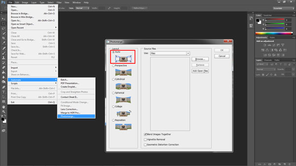
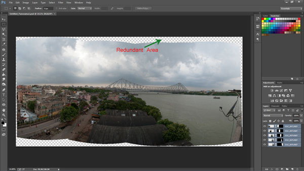

Panoramic Photography | Stitching
Stitching your panorama
The next step is stitching your panorama. There are plenty of panoramic stitching software available on the internet. I will put a list of links to some of the best software at the end of this article. The stitching process is similar across software but as of now we will use the standard photo editing tool – Adobe Photoshop. The stitching process in Adobe Photoshop is fully automated.
Since you may have shot more than one panorama series, for the purpose of identification it would be easier to store each series in a separate folder. You may have shot in JPEG or RAW but make sure you do not edit individual photographs.
Steps to stitch a panorama:
1. Open Photoshop
2. Click File > Automate > Photomerge
3. “Auto” is the default Layout option. Photoshop analyzes the source images and applies either a Perspective, Cylindrical, and Spherical layout, depending on which produces a better Photomerge. 4. Choose “Auto” if it is not selected by default.
5. Check “Blend Images Together
6. Next Click “Browse” and locate the separate Folder where you have put in your panorama series. Select the series and click “OK”